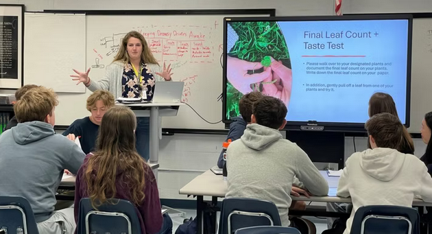

Mrs. Fairbanks

Mrs. Fairbanks came in to talk to us about hydroponics. She explained how the systems work and what is needed to keep the plants healthy. She also talked about how these systems are used outside of school in real agriculture.
- Hydroponic systems can grow plants without using soil.
- The water and nutrients have to be checked regularly or the plants can die.
- Small changes in the environment can have a big effect on how well the plants grow.